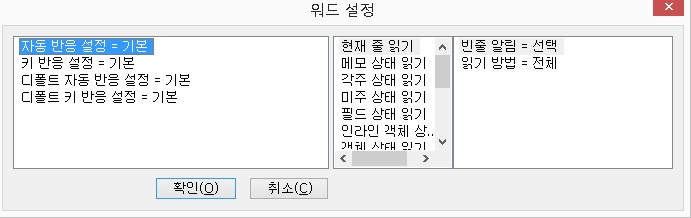
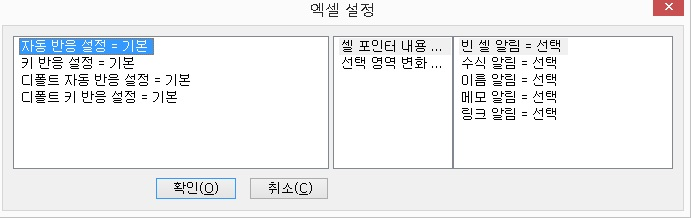

센스리더는 Microsoft 워드에서 입력되는 글자나 캐럿의 이동에 따른 변화를 음성으로 출력해 줍니다. 또한 기본적인 음성 출력 외에 문서 편집에 도움이 되는 테이블 정보나 문법 및 맞춤법 오류 등의 정보를 추가적으로 제공해 줍니다.
사용자는 이러한 여러 기능들을 상황에 알맞게 설정함으로써 워드 프로그램을 보다 효율적으로 활용할 수 있습니다.
사용자는 자신의 사용 스타일에 맞게 음성 정보의 출력 방식을 설정할 수 있습니다. MS-워드가 실행 중인 상태에서 설정키인 <Ctrl-Shift-F9>키를 누르면
'워드 설정' 대화상자가 출력됩니다.
대화상자에서 설정을 변경하고자 한다면 원하는 목록에 위치한 다음 <Space> 키를 누릅니다. 모든 설정을 마친 후에는 '확인' 버튼을 눌러 변경된 사항을 적용해야 합니다.

설정 가능한 항목은 다음과 같습니다.
1. 페이지 자동 알림: 페이지의 변화를 음성으로 알려줍니다.
1) 선택: 방향키를 사용해 캐럿을 움직일 때 페이지가 변경되면 자동으로 알려줍니다.
예를 들어, 방향키를 이용해 두 번째 페이지를 읽고 있는 도중 세 번째 페이지로 넘어가게 되면 세 번째 페이지의 첫 행을 읽기 전 "페이지 3"이라고 음성출력을 해 줍니다.
2) 해제: 페이지 정보를 출력하지 않습니다.
* 문서의 페이지 수가 많은 경우 페이지 자동 읽기 기능을 사용하면 페이지를 체크하는 데 시간이 다소 지연될 수 있습니다.
2. 테이블 자동 알림: 테이블의 정보를 알려줍니다.
1) 선택: 캐럿을 움직일 때 테이블과 관련된 상태라면 해당 테이블 정보를 알려줍니다.
테이블과 관련된 정보는 다음과 같습니다.
① 테이블 진입: 새로운 테이블을 만났을 경우 테이블의 진입을 알리기 위해 행, 열에 대한 정보를
출력합니다. 행과 열의 정보는 '현재 / 전체'의 형식을 사용합니다.
예를들어, 3행 3열의 테이블에 진입했고 현재의 위치가 1행 1열이라면, 출력의 내용은 "테이블 행 1 / 3 열 1 / 3"이 됩니다.
만일, 겹쳐진 테이블에 진입한 경우라면 해당 테이블의 레벨 정보가 추가됩니다. 위 예의 테이블이 2차 테이블이라면 출력 내용은 "테이블 중첩레벨 2 행 1/ 3 열 1 / 3"이 됩니다.
② 테이블 탈출: 캐럿이 테이블에 위치했다가 벗어난 경우 '테이블 끝'라고 음성출력을 합니다.
만일, 테이블이 겹쳐져 있어 하나의 테이블을 벗어난 후 다시 다른 테이블을 만나게 되면 테이블 진입으로만 처리하게 됩니다.
③ 열의 변경: 하나의 테이블 안에서 열의 변화가 있을 경우에는 변경된 열에 대한 정보만을 출력해
줍니다.
예를 들어, 현재의 행이 전체 3열로 이루어져 있고 1열에서 2열로 이동한 경우 "열 2 / 3"라고 음성출력합니다.
④ 행의 변경: 하나의 테이블 안에서 행이 변경된 경우에는 변경된 행의 정보만을 출력해 줍니다.
예를 들어, 3행 3열의 테이블이 사용중이고 2행 3열에 있다가 3행으로 이동한 경우 "행 3 / 3"라고 음성출력합니다.
⑤ 행의 끝: 현재의 캐럿 위치가 테이블 행의 끝에 있을 경우 행 끝임을 출력합니다.
예를 들어, 2행의 끝에 있는 경우 "2행 끝"이라고 출력합니다.
2) 해제: 테이블에 표시된 글자(화면상의 내용)만을 출력합니다.
3. 테이블 제목 읽기
현재의 CELL에 해당되는 제목CELL(첫번째 CELL)의 내용을 먼저 읽어 줄지 여부를 결정할 수 있습니다.
만일, 3행 3열의 테이블에서 현재의 CELL이 3행 3열에 위치한 경우, 행 제목셀은 3행 1열이고 열 제목셀은 1행 3열이 됩니다.
1) 열 제목: 열의 이동시에 현재 셀의 내용 전에 열 제목셀의 내용을 먼저 출력합니다.
2) 행 제목: 행의 이동시에 현재 셀의 내용 전에 행 제목열의 내용을 먼저 출력합니다.
3) 모두: 열의 이동시에는 열 제목 셀을, 행 이동시에는 행 제목 셀을 먼저 출력합니다.
4) 읽지 않음: 제목 셀의 내용을 출력하지 않습니다.
4. 테이블 주소 읽기: 주소를 읽는 방식을 선택합니다.
1) 행열 방식: 셀 위치를 읽을 때 행, 열 모두 숫자를 사용하여 읽습니다.
2) A1 방식: 셀 위치를 읽을 때 엑셀에서와 같이 'A1' 형식으로 읽습니다.
5. 오류 자동 알림: 문법과 맞춤법의 오류 메세지 출력 여부를 선택합니다.
1) 오류 종류: 캐럿이 위치한 곳에 오류(문법, 맞춤법)가 있는 경우 이를 알려줍니다.
2) 오류 수 + 오류 종류: 오류 종류에 덧붙여 오류의 개수까지 출력합니다. 단, 오류의 개수는 현재 위치한 행의 오류수이며 행 단위의 캐럿 이동시에만 출력합니다.
3) 해제: 오류를 확인하지 않습니다.
센스리더는 Microsoft 워드에서 다양한 도표 읽기 방법을 제공하여 도표의 구조 파악과 작성에 많은 도움을 줍니다.
다음은 도표 읽기에서 사용할 수 있는 기능들입니다.
| 기능 | 기능키 | 설명 |
|---|---|---|
| 좌측 셀 읽기 | Ctrl-Alt-왼쪽 화살표 | 한 번에 한 셀씩 왼쪽으로 이동하며 읽습니다. |
| 우측 셀 읽기 | Ctrl-Alt-오른쪽 화살표 | 한 번에 한 셀씩 오른쪽으로 이동하며 읽습니다. |
| 상위 셀 읽기 | Ctrl-Alt-위 화살표 | 한 번에 한 셀씩 위로 이동하며 읽습니다. |
| 하위 셀 읽기 | Ctrl-Alt-아래 화살표 | 한 번에 한 셀씩 아래로 이동하며 읽습니다. |
| 행 첫 셀 읽기 | Ctrl-Alt-Home | 현재 행의 첫 번째 셀을 읽습니다. |
| 행 끝 셀 읽기 | Ctrl-Alt-End | 현재 행의 끝 셀을 읽습니다. |
| 열 첫 셀 읽기 | Ctrl-Alt-Pgup | 현재 열의 첫 번째 셀을 읽습니다. |
| 열 끛 셀 읽기 | Ctrl-Alt-Pgdn | 현재 열의 마지막 셀을 읽습니다. |
| 현재 위치로 | Ctrl-Alt-Enter | 수동 읽기를 사용하여 현재 읽고 있는 셀 위치로 실제 캐럿을 이동시켜 현재 셀을 바로 편집할 수 잇도록 합니다. |
센스리더는 엑셀에서의 메뉴 이동과 대화상자의 포커스 객체 이동 그리고 셀의 이동 상황 등을 기본적으로 음성출력합니다. 또한 캐럿 읽기 기능과 포인터 기능을 통해 다양한 방향에서 문서의 내용을 확인할 수 있으며, 셀 제목 읽기나 음성출력 방법 등을 사용자가 지정해서 사용할 수 있습니다. (7장 센스리더의 기능과 기능키 중 캐럿 읽기와 포인터 읽기 참조)
1. Excel 설정
Excel을 실행하여 셀 작업을 하는 중이라면 언제든지 <Ctrl-Shift-F9>키를 사용하여 설정 대화상자를 호출할 수 있습니다.

Excel 설정 대화상자에는 두 개의 목록상자가 포함돼 있는데, 처음 포커스가 되는 목록은 Excel의 일반적 설정을 나타내는 목록이며, 나머지는 기준셀(셀 제목 읽기에서 사용)의 설정을 위한 목록입니다.
일반적 설정 사항의 변경은 원하는 항목을 목록에서 선택한 후 <Space>키를 이용하여 변경할 수 있으며, 기준셀에 대한 설정은 해당 목록에서 팝업 메뉴를 호출해 작업할 수 있습니다. 설정 이후에는 반드시
'확인' 버튼을 눌러 변경된 설정을 적용시켜 주어야 합니다.
참고로, 셀 제목 읽기 및 기준셀에 대한 정보는 현재 열려져 있는 문서와 연결되어 각 문서별로 저장되게 됩니다.
설정 대화상자의 항목은 다음과 같습니다.
1) 셀 읽기: 기본적인 셀 읽기 방법을 설정합니다.
① 내용 + 주소: 셀 정보를 출력할 때 셀의 내용을 먼저 출력한 후 해당 셀의 주소를 출력합니다.
예를들어, 현재 c3셀에 위치해 있고 그 내용이 100이라면 '100 C 3'라고 읽어줍니다.
② 주소 + 내용: 셀의 정보 출력시 해당셀의 주소를 먼저 출력한 후 내용을 출력합니다.
③ 내용만: 셀의 주소는 출력되지 않고 그 내용만을 출력합니다. 셀이 비어 있으면 아무 메세지도 출력하지 않습니다.
2) 선택 읽기(블럭 읽기): 여러 셀을 선택할 경우의 읽기 방법을 설정합니다.
① 변화 상황: 변화가 있는 셀을 중심으로 선택과 해제 상황을 알려줍니다.
예를 들어, 현재 a1에서 c1까지 선택되어 있는 상황이고 d1 셀이 추가 선택됐다면 "D 1 선택"이라 출력되고, c1 셀이 해제되었다면 "C 1 해제"라고 읽어주게 됩니다.
② 선택 범위: 선택되고 있는 셀들의 범위를 "...에서 ..."의 형식으로 알려줍니다.
예를들어, 현재 A1에서 C1까지 선택되어 있고 D1 셀이 추가 선택되었다면 "A1에서 D 1"라고 출력하며, C1 셀이 해제가 되었다면 "A 1에서 B 1"라고 읽어줍니다.
3) 수식 구분: 일반 데이터와 수식의 결과를 구분해 줍니다.
① 선택: 일반 데이터와 수식에 의한 결과를 구분해 줍니다.
예를들어, 100이란 값이 있을 때 이것이 어떤 수식에 의한 결과라면 "수식결과 100"이라 출력됩니다.
② 해제: 일반 데이터와 수식에 의한 결과를 구분하지 않고 셀의 내용만을 출력합니다.
4) 빈셀 읽기: 빈셀의 음성출력 방식을 지정합니다.
① 선택: 셀의 내용이 없을 때 '빈셀'라고 음성 출력함으로써 비어 있는 셀을 알려줍니다.
② 해제: 내용이 있는 셀의 경우에만 셀 내용을 출력합니다.
5) 행 전체 읽기: 행을 이동할 때 음성 출력 방법을 설정합니다.
① 선택: 셀 이동시 행의 이동이 있을 때 그 행의 전체 내용을 읽어줍니다.
② 해제: 셀 이동이 있을 때 현재 활성된 셀만 읽어줍니다.
6. 셀 제목 읽기
현재의 CELL을 중심으로 제목에 해당하는 CELL의 내용을 먼저 읽을 것인가를 선택합니다. 제목 셀은 기준 셀에 따라 달라지게 되며, 기준 셀을 등록할 수 있는 수에는 제한이 없습니다. 기준 셀은 사용자가 직접 설정합니다.
예를 들어, 현재 C3 셀이 선택되어 있고 B1 셀이 기준이라면, 행 제목셀은 B3 셀이고 열 제목셀은 C1 셀이 됩니다.
① 열 제목: 열의 이동시에 열 제목셀 내용을 먼저 출력합니다.
② 행 제목: 행의 이동시에 행 제목셀 내용을 먼저 출력합니다.
③ 모두: 열의 이동시에는 열 제목셀의 내용을, 행 이동시에는 행 제목셀의 내용을 먼저 출력합니다.
④ 읽지 않음: 제목 셀의 내용은 읽지 않고 현재 셀의 정보만을 출력합니다.
7. 검색 우선순위: 제목셀을 구별하는데 있어서의 우선순위를 결정합니다.
① 행: 기준셀을 행 중심으로 찾습니다.
만일, A10과 C1 셀이 기준셀로 등록되어 있고 현재 D11 셀에 위치한 경우, 기준셀은 A10이 됩니다.
② 열: 기준셀을 열 중심으로 찾습니다.
만일, 기준셀이 A10과 C1로 등록되어 있고 현재 D11 셀에 위치해 있다면, 기준셀은 C1 셀이 됩니다.
2. 기준 셀 등록 및 삭제
1) 기준 셀 등록의 필요성
기준셀이란 셀 제목읽기를 위해 사용되는 기준점이 되는 셀을 의미합니다.
엑셀을 사용할 때 시각적으로는 한 그룹으로 정해져 있다 하더라도 내부 논리적으로는 그 그룹의 구분이 힘든 경우가 있습니다. 따라서 한 그룹의 기준(좌상단)을 사용자가
지정할 수 있도록 구성하였으며, 셀 제목 읽기가 선택되어 있을 경우 현재 셀에서 가장 가까운 기준셀을 검색하여 그것을 기준으로 제목 셀을 판단하게 됩니다.
2) 기준 셀 등록
① 기준으로 정할 셀로 이동합니다.
② '엑셀 설정' 대화상자를 호출합니다.
③ <Tab>키를 눌러 기준 셀을 등록하는 목록에 포커스합니다.
④ <PopUp> 키를 눌러 팝업 메뉴를 호출한 후 [등록] 메뉴 항목을 선택합니다.(목록에 해당 셀 정보가 추가됩니다.)
⑤ '확인' 버튼을 누릅니다.
3) 기준 셀 삭제
① 엑셀 설정 대화상자를 호출합니다.
② 기준셀을 등록하는 목록으로 이동합니다.
③ 삭제를 원하는 셀을 목록에서 선택합니다.
④ 팝업 메뉴를 호출한 후 [삭제] 메뉴 항목을 선택합니다.
⑤ '확인' 버튼을 누릅니다.